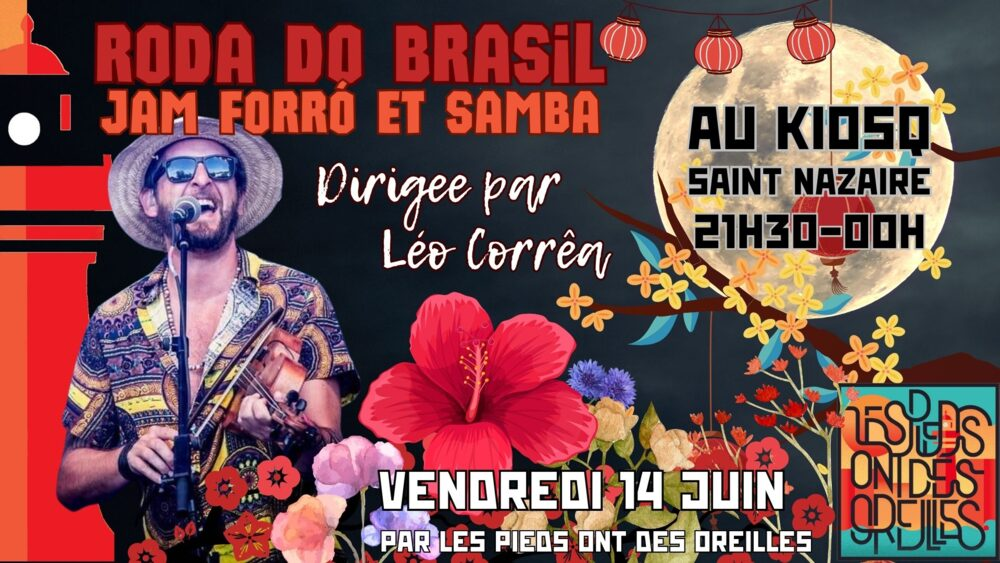

Sambada do Brasil (jam forró/samba)

Lieu : Le Kiosq, Saint-Nazaire
Jam session et bal forró/samba ouvert aux musiciens de tout bord, dirigée par l'artiste brésilien Léo Corrêa. Les musiciens interprètent les standards de forró et de samba pendant que le public danse. Participation libre (chapeau).
Vidéos
Les vidéos sont hébergées par YouTube. Elles ne se chargent, et YouTube n'est contacté, qu'au moment où vous cliquez sur lecture.